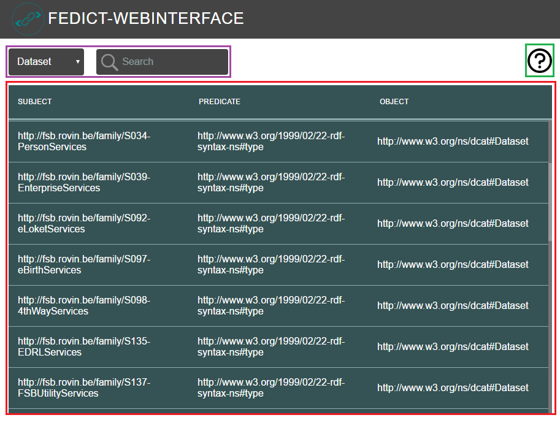
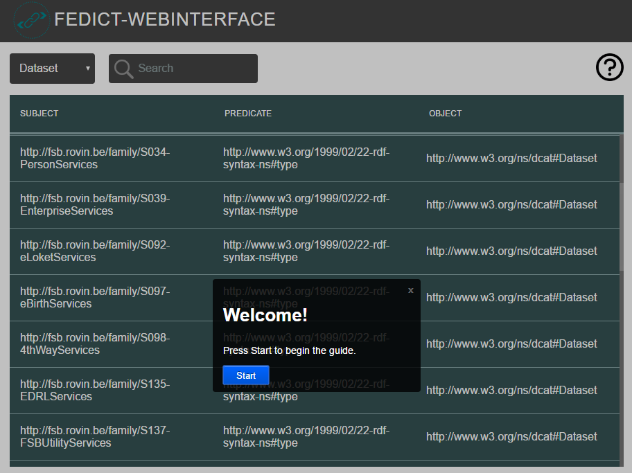

For providing datasets to the web-interface, LDF or Linked Data Fragments is used.
The web-interface uses LDF Client.
The server uses LDF Server in the background.
For providing datasets to the web-interface, LDF or Linked Data Fragments is used.
The web-interface uses LDF Client.
The server uses LDF Server in the background.
This web-interface is easy to use tool for users that would like to search and inspect datasets. It utilises LDF Client and LDF Server behind the scenes. And it's designed to be compatible with all browsers and mobile devices.
The UI consists from a search, guide and a table showing the datasets.
DCAT describes datasets on 3 different levels. The Catalog, the Dataset and the Distribution level. Each level contains information, meta-data, about itself, such as the title, description, and so on. Furthermore, the upper layers contains URI references to its children, which means it’s easy to cross-reference all of the data.
The CatalogThe Catalog is the upper level in the DCAT standard. It contains a description of itself, such as the title, description, publisher and licenses. It also contains references to the different Datasets which can be found within this particular Data Catalog.
The DatasetThe Dataset contains information about the individual Dataset, such as the author, which category the dataset belongs to, geographical information, and so on. It also has references to all the different Distribution methods of this particular dataset.
The DistributionThis is the deepest level of the DCAT standard. At this level we define the access URL for the data, type (CSV, JSON, …), license, size, download URL, and so on.
Explains in (a nice way) details about the web-interface.
Datasets are displayed here.
For providing datasets to the web-interface, LDF or Linked Data Fragments is used.
The web-interface uses LDF Client.
The server uses LDF Server in the background.
Provides access to different types of data that's stored on the server. When a LDF-Client requests data, Triple Pattern Fragments are used for efficient client-side querying.
LDF-ClientClients execute SPARQL queries using Triple Pattern Fragments. This way, servers only need to publish Triple Pattern Fragments of a dataset, providing a scalable yet efficient way to query Linked Data.
Before this web-interface existed, the project WSDL2DCAT was made.
It basically converts WSDL files (that represent services) to DCAT files in which services are linked with each other. After the tool was finished, a web-interface was needed for displaying these DCAT files.
For more detailed information, please visit the wiki.The projects were made by 2 (young) back-end developers that worked in open Summer of code 2016. Both developers had to make a tool for converting WSDL files to DCAT. After successful first week, they worked on the web-interface which provides end-users the ease to search DCAT files.
Umut Saglam
Miguel De Strooper